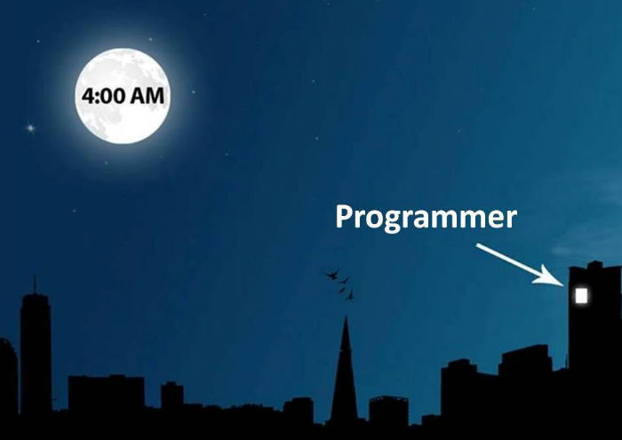
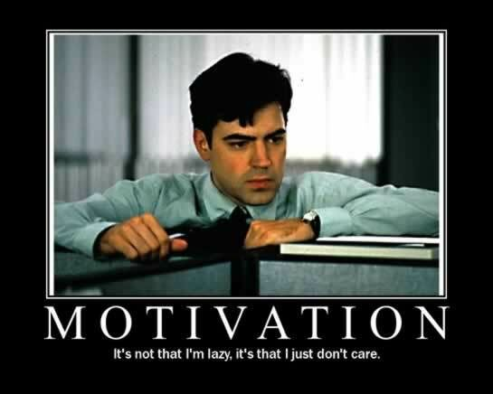
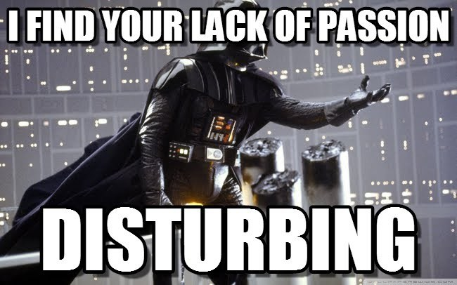
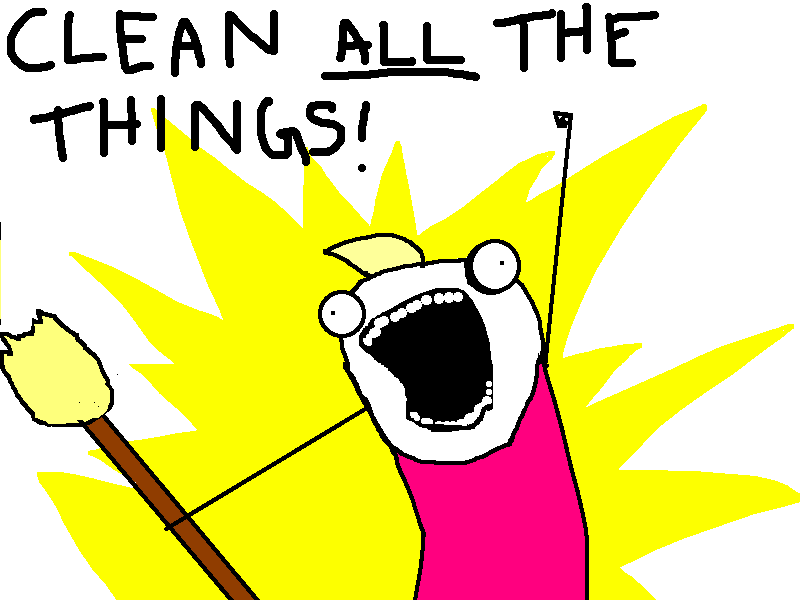
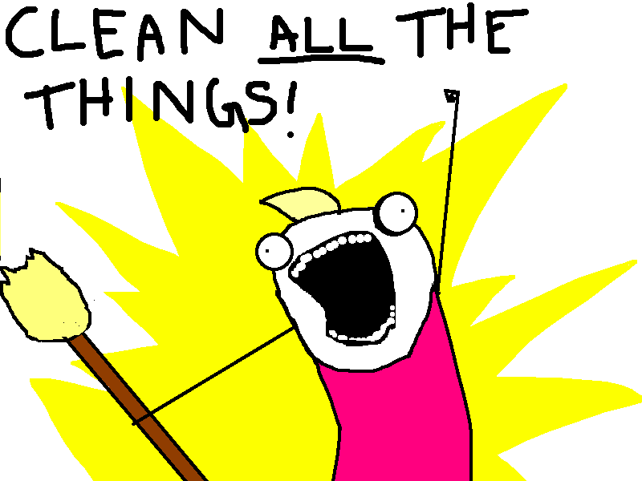
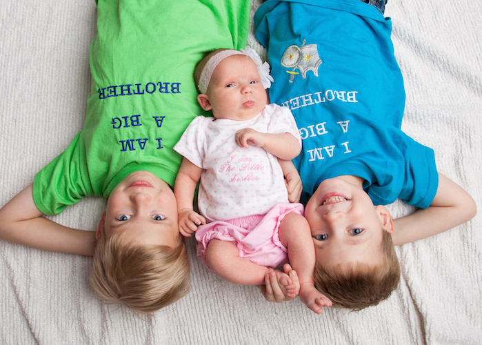

Everyday Depression
by Jon Willesen
Find this talk online
Statistics About Depression
- Affects 14.8 million American adults (6.7%)
- Responsible for 20,000 suicides per year
- (about two-thirds of all suicides)
- 9.8 million people aren't getting treatment
- 80% of people who do get treated show improvement
Presenteeism

Relevance?

 ?
?

Steven Townsend
Disability / Disorder ≠ Handicap


Is Depression a Handicap?



 



Mindset
"Are you going to your classes?"
"Yes."
"Are you keeping up with your reading?"
"Yes."
"Are you doing ok on your exams?"
"Yes."
"Well, then you're not depressed."

"I suffered for no good reason for decades, until I couldn’t reconcile my awesome life with feeling terrible all the time."
"It’s like I was in a loud room for so long, I didn’t know how loud it was."
- emphasis added
First Episode
"Have you been thinking about suicide?"
"Not seriously."

Junior High
Life After Junior High
Unprepared

Symptoms
- Persistent sad, anxious, or "empty" feelings
- Feelings of hopelessness or pessimism
- Feelings of guilt, worthlessness, or helplessness
- Irritability, restlessness
- Loss of interest in activities or hobbies once pleasurable, including sex
- Fatigue and decreased energy
- Difficulty concentrating, remembering details, and making decisions
- Insomnia, early-morning wakefulness, or excessive sleeping
- Overeating, or appetite loss
- Thoughts of suicide, suicide attempts
- Aches or pains, headaches, cramps, or digestive problems that do not ease even with treatment.
Life Plan
- Work and raise children
- Go die in a ditch
You're a good dad, even though you don't smile very much.
- Andrew Willesen
? $

"Really? It made that big a difference?"
"Boy, Dad sure is in a good mood today."
- Andrew Willesen
"Depression Lies"
"Would you call the doctor for me?"
Drama?
